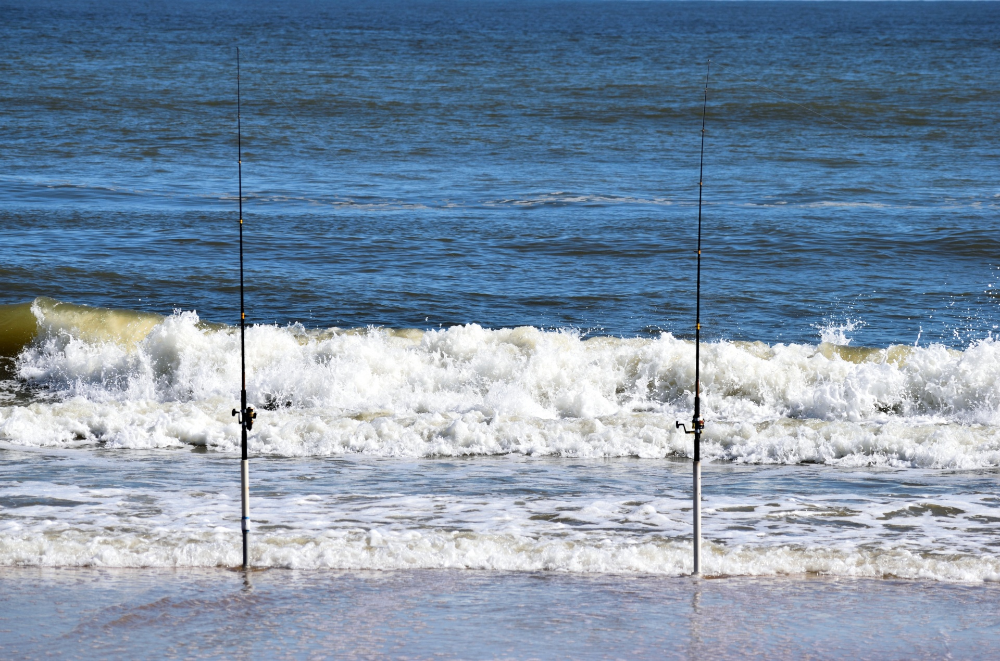

I find saltwater fishing to be very relaxing. Whether I am fishing the lakes in the mountains, rivers in the valley or on a beach in the ocean I enjoy it. The tranquility of being outside and beautiful scenery makes the trip enjoyable. Fishing with family, friends or by yourself relieves the stresses of every day life.
We used a drone to fly our bait out past the breakers. We put a lip on one of the landing gears of the drone to hold the fishing line. Once we got where we wanted, I stopped the line, and to release it we turned the drone around and continued forward and it slid off the end.